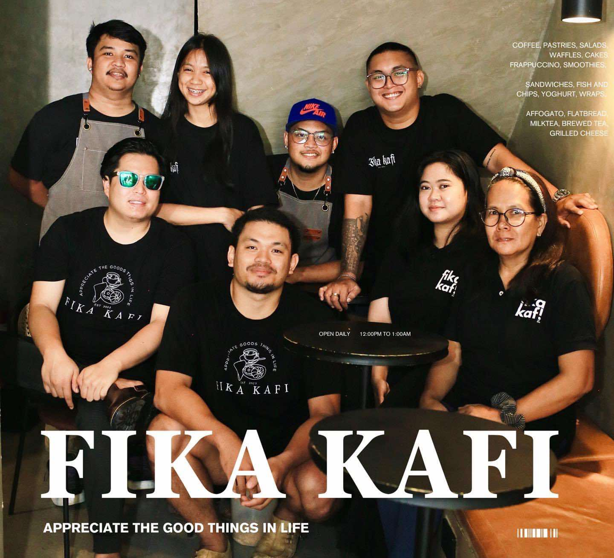
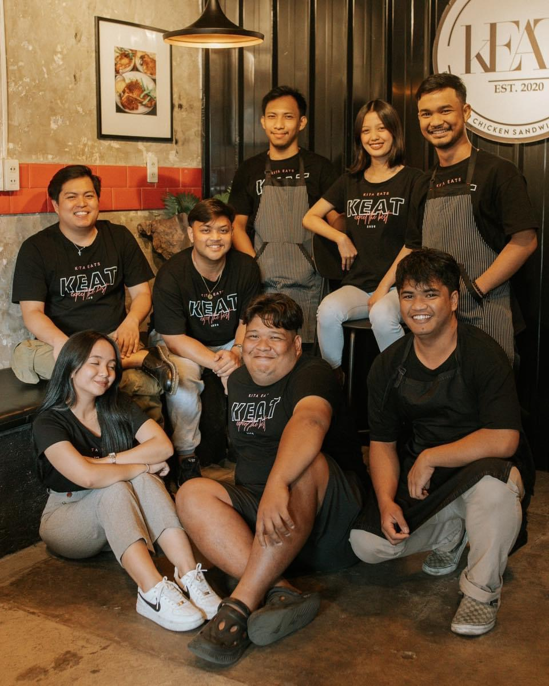

"Appreciate the good things in life."
Fika Kafi’s journey began in 2023, emerging from the success of its founders’ first venture, Keat, a vibrant restaurant that opened its doors in 2020. With Keat’s rapid rise, the founders were inspired by a growing desire among their patrons for more diverse and specialized beverage options. This demand led them to expand beyond traditional dining and venture into the world of coffee and beverages, culminating in the creation of Fika Kafi.
Deeply rooted in the cherished Swedish tradition of fika which means, taking time to pause, savor coffee, and connect with good company. Whether you’re searching for a cozy nook to catch up with friends, a quiet retreat for studying or working, or simply a welcoming place to indulge in a delicious treat, Fika Kafi offers the perfect setting. The café’s warm and stylish ambiance, paired with attentive, friendly service, creates an inviting environment where guests can truly relax and recharge. Every visit promises a delightful experience where quality, community, and comfort come together beautifully.

At Fika Kafi, you’ll discover a thoughtfully curated selection of beverages designed to satisfy every taste and craving. Their diverse menu features everything from rich, aromatic espresso-based coffees to a variety of non-coffee alternatives, ensuring there is something for everyone. For those seeking a refreshing option, Fika Kafi offers an array of milk teas, vibrant smoothies bursting with flavor, and inventive ice-blended drinks perfect for any time of day. Guests can also enjoy a selection of freshly pressed juices and traditional teas, crafted with care to deliver both comfort and refreshment. Complementing the beverage menu is a tempting assortment of pastries, ideal for pairing with your favorite drink and adding a sweet touch to your visit.
To stay connected with everything happening at Fika Kafi, be sure to follow them on Facebook and Instagram. Their social media platforms are brimming with updates on the latest menu creations, seasonal specials, and exclusive offers. Followers can also catch behind-the-scenes glimpses into daily life at the café, discover new events, and participate in special promotions. By joining their growing online community, you’ll be among the first to experience new launches and celebrations, bringing the lively spirit of Fika Kafi right to your feed, no matter where you are.
